Who it speaks to
Revenue leads at AI, robotics, sensing and data companies that sell to a few hundred named accounts, where a broad campaign spends its budget on people who will never buy.
As a marketer, I have always given brand a lot of weight, because it decides whether a buyer considers you at all and whether they still remember you when the time comes to buy. That is why I care about building brands properly, and this shelf is only the beginning: five brands I built or carried in 2026, from the first mark to the ads that carry it.
Want to reach out?
querovincent@gmail.comRevenue leads at AI, robotics, sensing and data companies that sell to a few hundred named accounts, where a broad campaign spends its budget on people who will never buy.
Torke reads as torque, the force that moves a heavy load. The mark chosen on 14 October 2026 is an internal ratchet, a part that turns forward and holds its position, which is what a pipeline should do.
Since Website v3 the page sits on black, and every section floats on it as a rounded panel in dark metal, mint or white. Black on aquamarine still reaches 16.07:1, so the main button reads at any size.
Demand with momentum, picked on 15 October 2026 from 100 candidates, sits beside the headline Count the leads that count with Torke.
Demand with momentum
Brand book, 12 November 2026, v3.0
Torke speaks to the revenue lead at a robotics or sensing company who has watched a broad campaign spend its budget on people who will never buy. A company selling warehouse robotics may have 400 real accounts worldwide, while most marketing programs are built for 40,000, so the ad platforms never collect enough conversions to finish learning.
Torke is the company I set up for that smaller, heavier market, and its first site was built on 31 August 2026. The name reads as torque, the force that moves a heavy load, and the mark chosen on 14 October is an internal ratchet that turns forward and holds its position.
The tagline and the website headline were picked the next day, from 100 candidates.
Count the leads that count with Torke
We build and run distribution for companies that want to grow with intent rather than volume, and we measure our work in qualified leads our clients accept.
Growth services for B2B companies are a crowded field, and much of it looks alike, with a dark hero, a gradient and a promise of more leads. Torke had to look as if it could carry weight, so the identity borrows from machinery: the mark is a ratchet, the surfaces look like brushed metal, and the copy rules ban words like powerful and seamless.
A technical buyer used to agency decks meets pages that read closer to an engineering document, which is the register that buyer already trusts. Since Website v3 on 11 November 2026, headings and every label are set in Instrument Sans, a narrow grotesk measured against Figtree so a heading never looks a size too large, and one aquamarine pill marks the single thing to do next.
Every pair that carries text is one dark colour and one light one, so each clears the 4.5:1 WCAG floor with room to spare.
| Aa | Black on Aquamarine, the main button | 16.07:1 |
| Aa | Ink on Lavender Blush, body text | 15.55:1 |
| Aa | Charcoal on Blush, secondary text | 6.02:1 |
| Aa | White on Aquamarine, banned | 1.31:1 |
The banned pair shipped once, as a menu hover on 16 October 2026, and the rule was written the same day. Aquamarine covers 5 percent of a page, so wherever it appears it reads as the next step.
#A9F0D1#E4D9FF#F7EBEC#595959#161616Aquamarine gets only 5 percent of any page, which keeps the signature colour working as a signal.
A rounded square holds an eight-tooth ratchet cut, the part that turns one way only. Charcoal or black sits on the light grounds, and aquamarine or white on black and charcoal, across seven colour files for every lockup.
The Website v3 home page, redesigned on 11 November 2026, opens on brushed metal with the headline Count the leads that count with Torke, and beside it a glass account book and a qualified lead with its five recorded facts.
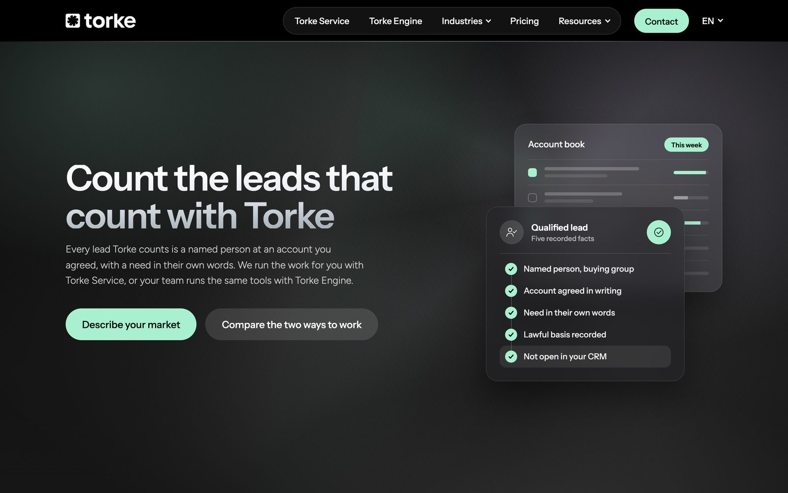
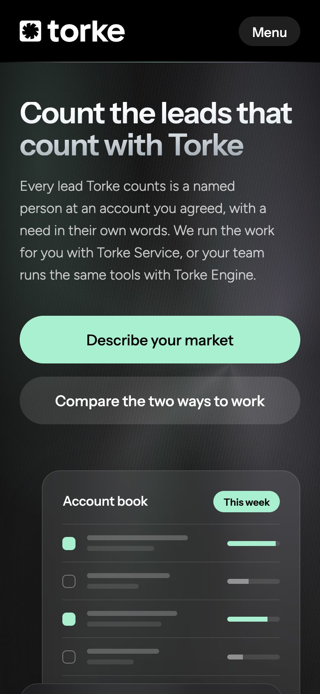
Panels sit 10px from the edge with a 24px radius, both buttons stack at full width, and the account book and the qualified lead overlap a little so both stay readable.
Visit torke.techEvery section floats on the black ground as a rounded panel, in a fixed order of dark metal, mint, dark metal and white, so two neighbours never share a ground. Dark panels carry glass cards, white at 5.5 percent with a faint hairline, and their colour glows stay under 17 percent.
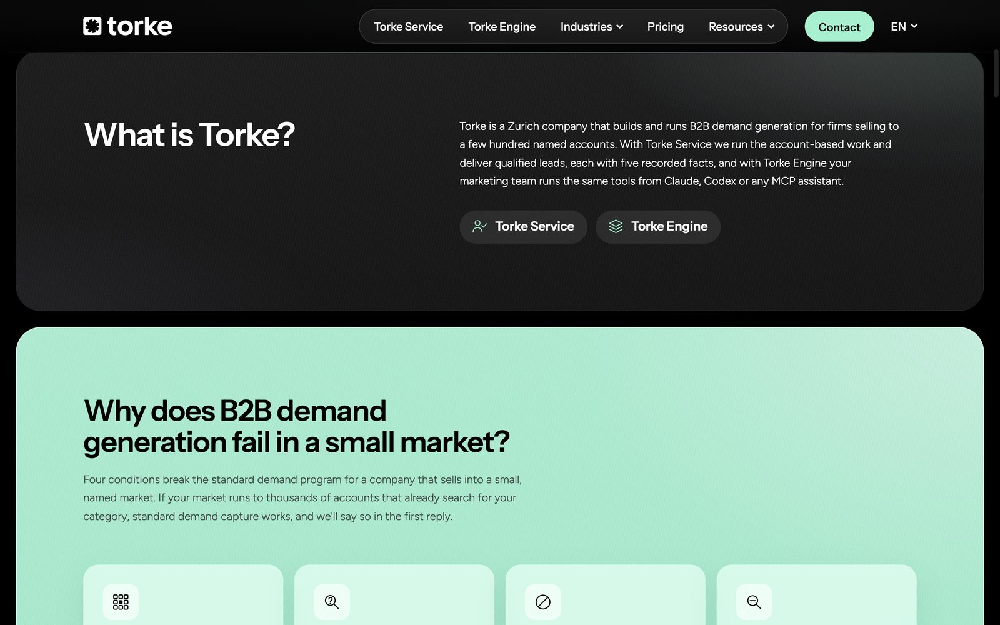
Every button is a plain solid pill with no outline: aquamarine with black text on dark, black on mint and white. The form is always its own dark card, with frosted fields and topics as pill toggles, and a link to it puts the cursor in the first field.
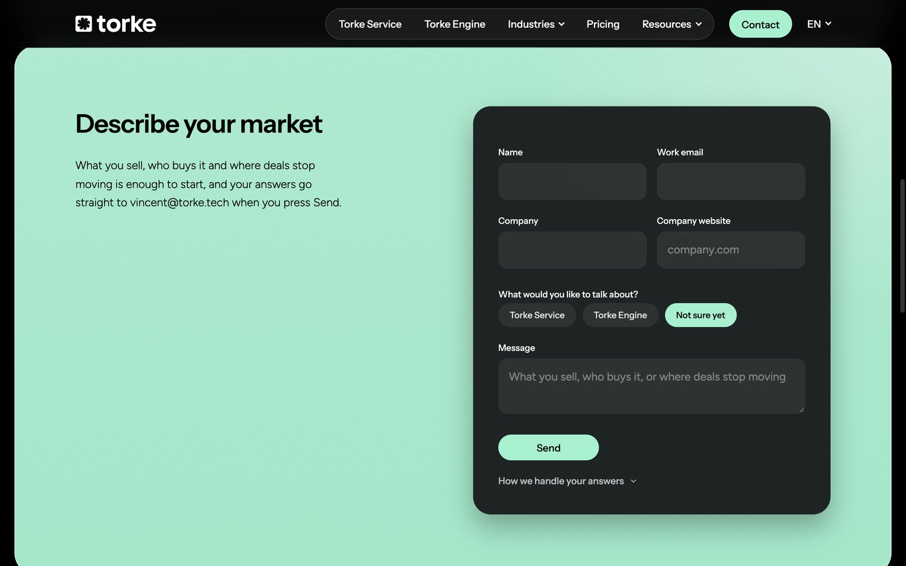
The LinkedIn banner and profile image, set on 15 October 2026, carry the line from the demand-gen article The week something changed is the whole pitch.
Set on 16 October 2026 from two lines on the website.
A company selling warehouse robotics may have 400 real accounts, while most programs are built for 40,000.
Two concepts set on 16 October 2026 for feeds that favour taller images, built from lines already on the website.
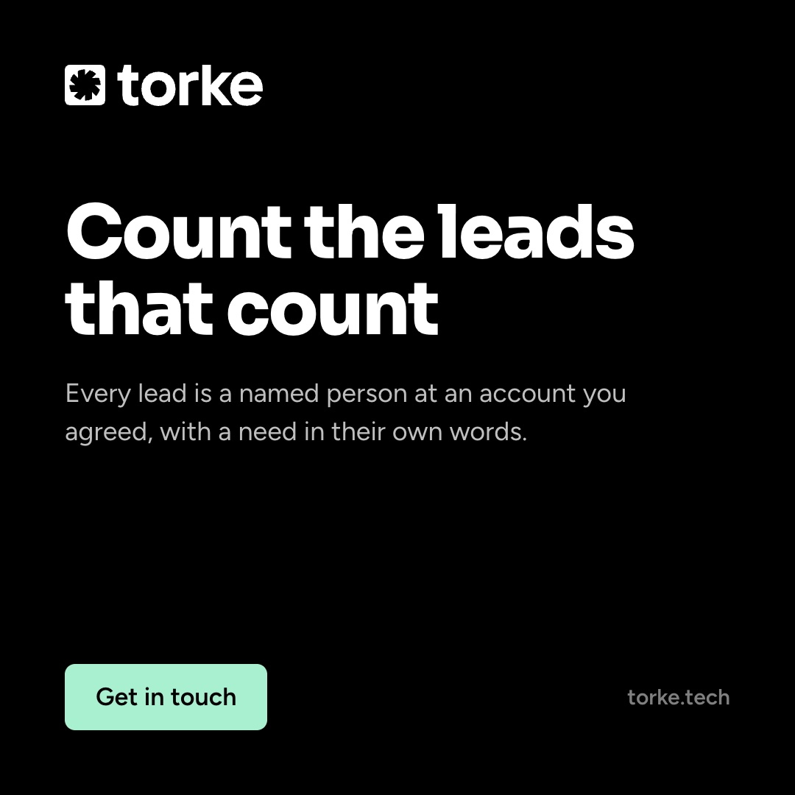
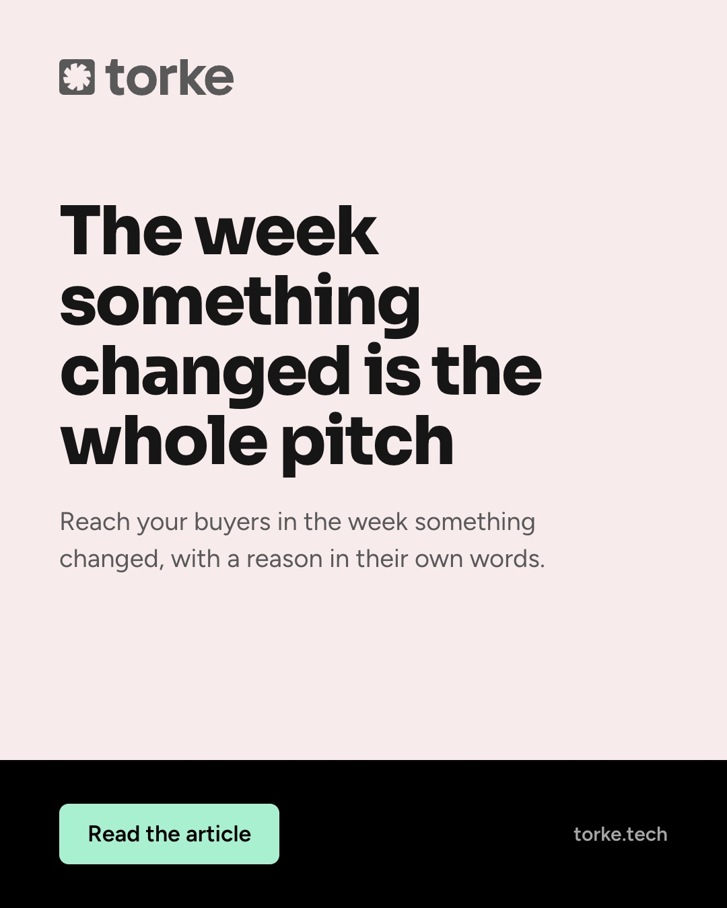
The same system at 1456 by 180, where only the mark, one line and one button survive.
Every format keeps the rules from the colour pages: one accent, one action, and type that holds its contrast at the smallest size.
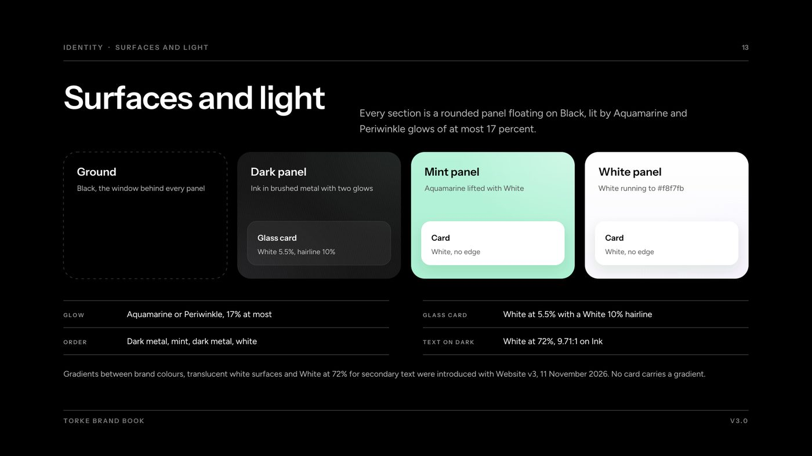
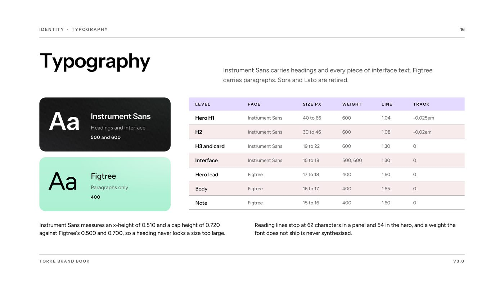
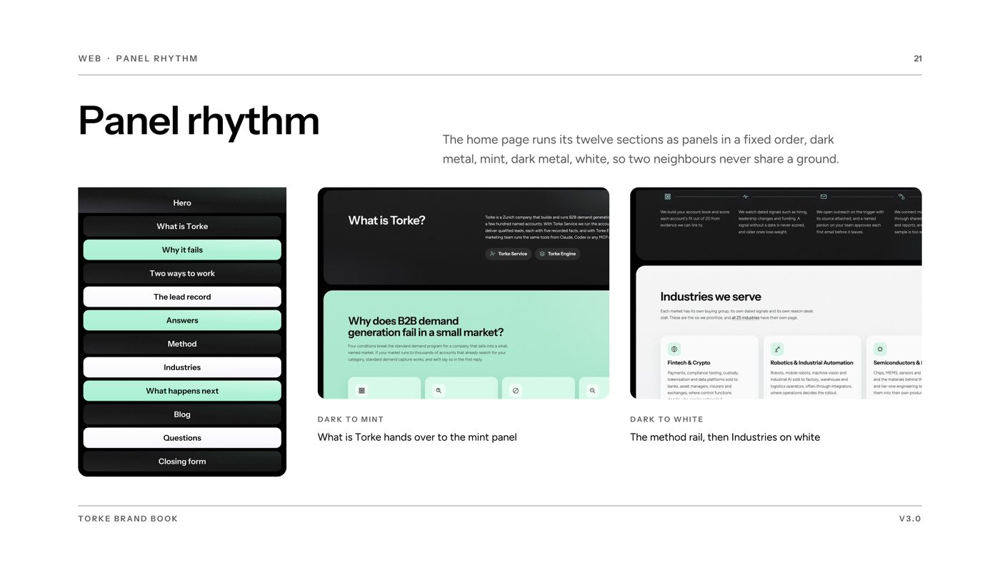
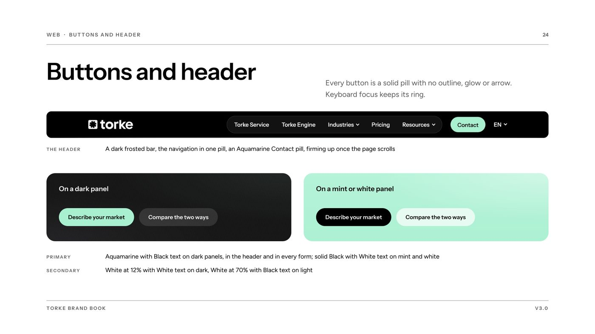
Version 3.0 records Website v3: the surfaces, the type pair, the panel rhythm and the buttons, in a book that ends on twelve checks every page passes before it ships.
Close the book, or open the next one on the shelf, Autobasket.
torke.tech
Drag the page corner, or press the arrow keys
Heads of e-commerce at mid-market shops with hundreds or thousands of products, who see the first orders arrive from AI assistants rather than from a search page.
The mark is a basket drawn in one continuous rounded stroke. That stroke sets every other shape in the system, which is why buttons are pills and cards carry a 20px radius.
Charcoal, Steel and Parchment keep the pages calm. One Tropical Mint marks the next action at 8.12:1 on charcoal, and never sits as text on a light ground, where it falls to 1.37:1.
Be the next best action. Autobasket kept the line when it took over Neurock's agentic commerce work in September 2026, because the job stayed the same.
Be the next best action
Design system, v2.0.0
Autobasket speaks to the head of e-commerce at a mid-market shop with hundreds or thousands of products. A purchase used to start with a search and end on a checkout page. Now it often starts with someone describing a problem to ChatGPT, Perplexity, Claude or Gemini, and the assistant compares the options and sometimes places the order.
Autobasket opened on 22 September 2026 to prepare online shops for that buyer. It took over the agentic commerce work Neurock had started and kept the line Be the next best action, because the job stayed the same.
Found, trusted, bought
Autobasket exists so that the shops people would pick for themselves stay in the answer when an assistant does the picking.
AI commerce is often sold with glowing robots and violet gradients, and a merchant who signs off on checkout changes has learned to distrust both. Autobasket went the other way, with Charcoal, Steel and Parchment on almost every surface and the brief's principle Calm by default setting the tone.
The single Tropical Mint is kept for the next action, so a shop owner scanning a page finds the button before the copy. The round stroke of the basket mark sets every other shape, which is why buttons are pills and cards carry a 20px radius.
Tropical Mint is bright enough to read as a light colour, so it only carries text on the dark charcoal bands.
| Aa | Mint on Charcoal 800, links and accents | 8.12:1 |
| Aa | Charcoal 700 on Mint, button labels | 5.71:1 |
| Aa | Charcoal 700 on Parchment, body text | 7.80:1 |
| Aa | Mint on Parchment, banned | 1.37:1 |
On a light ground the mint falls to 1.37:1, which is why the system says mint is never text on a light ground and why a mint button always carries a charcoal label.
#01EBB0#2C343C#A2AEBB#F5EFEDOn 16 October the palette moved to Charcoal, Steel and Parchment around one mint, with two rules that keep the mint legible: it is never text on a light ground, and a hover never puts white text on it.
The mark is a basket drawn in one continuous rounded stroke, and that round stroke sets the shape language of every button and card. Five lockups in three colours, plus app icons.
Open the design system in Figma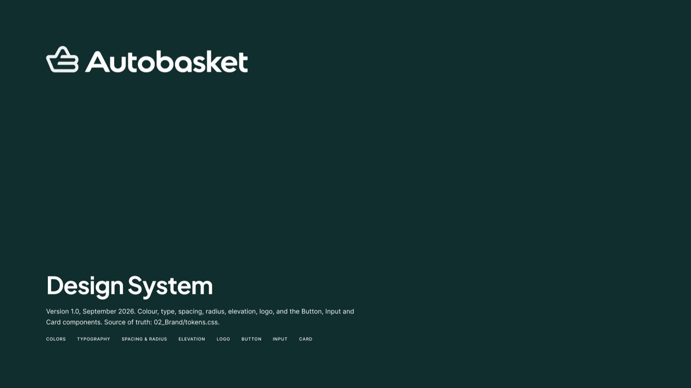
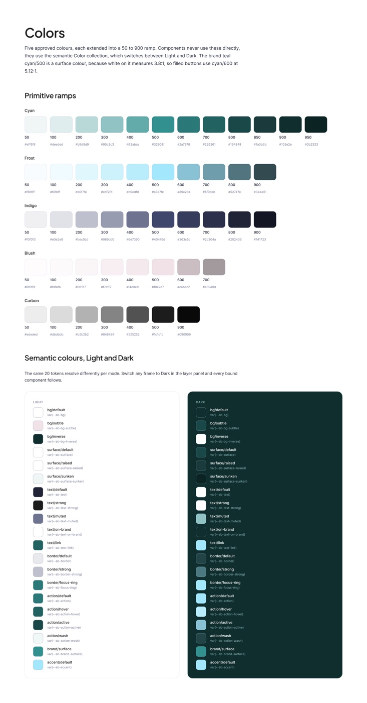
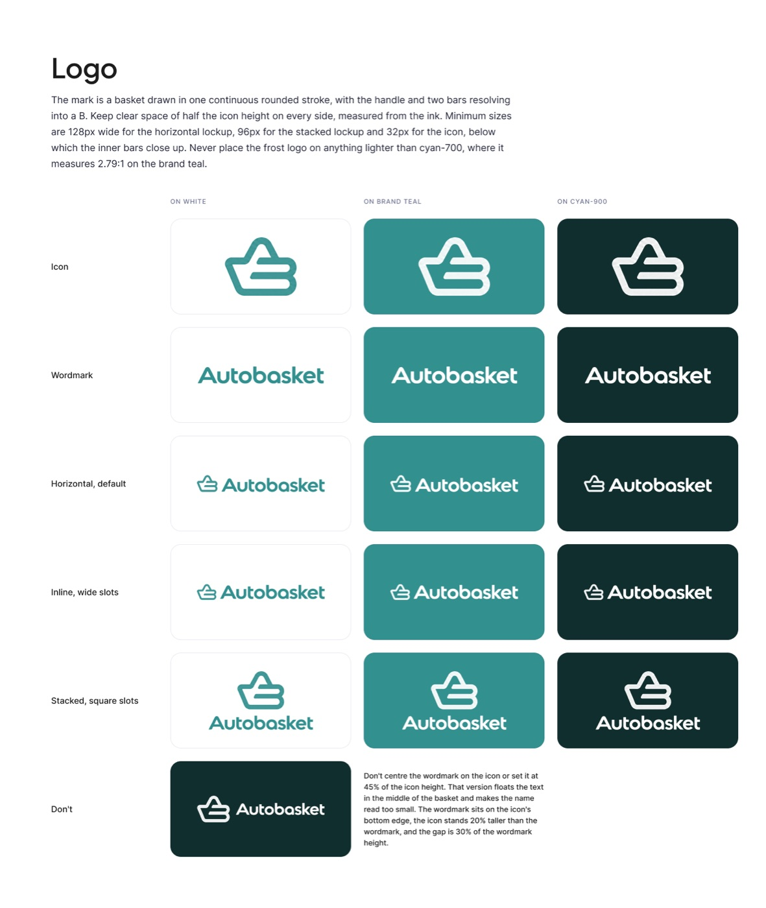
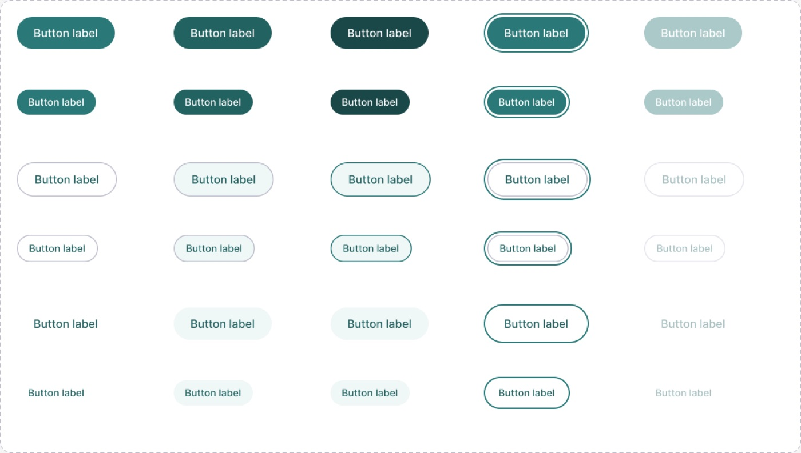
Colour, type, spacing, radius, elevation, logo and the Button, Input and Card components, locked at v2.0.0 on 16 October 2026.
The Astro site serves people and assistants at once, with an llms.txt file, a Markdown mirror of every page and structured data.
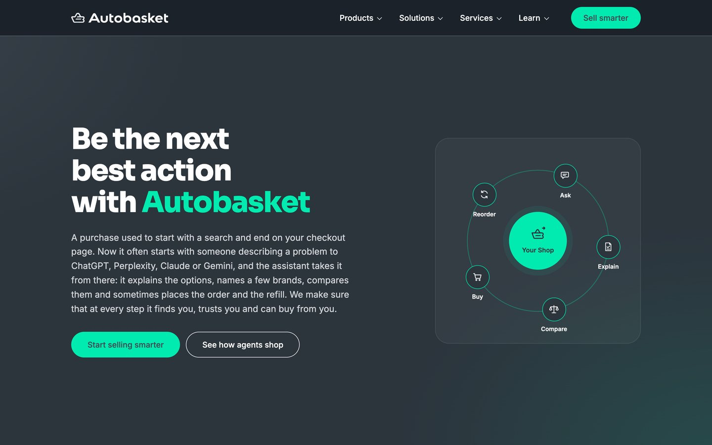
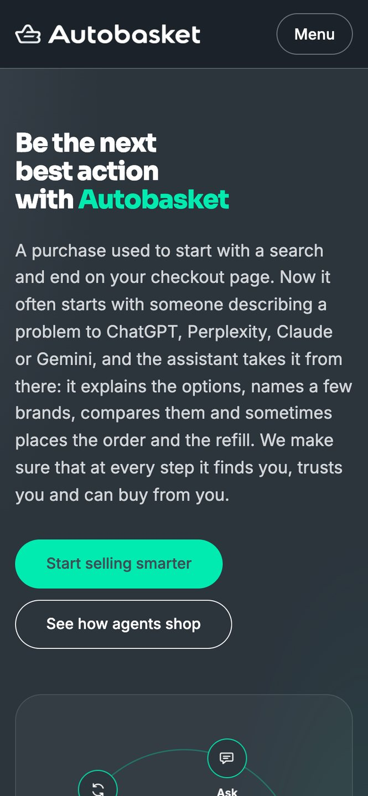
The domain autobasket.ai still did not resolve on 17 October 2026, so both screens come from that day's production build of the site, served locally.
The hero card shows a product as the customer sees it, then flips to the Product data their AI agent reads: name, category, price in CHF, stock and delivery time. It holds each side for about four seconds before the next product comes in, and a click flips it by hand.
The first widget sets search, website and checkout against the five steps people follow now, from asking an assistant to the reorder. The second lets the reader pick direct browsing, AI-assisted or agent checkout, and rewrites every stage for that route.
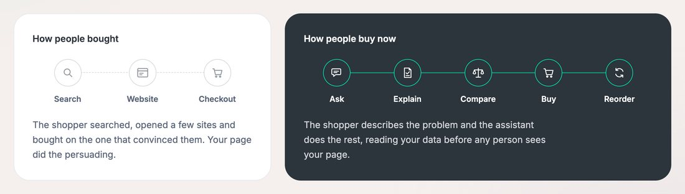
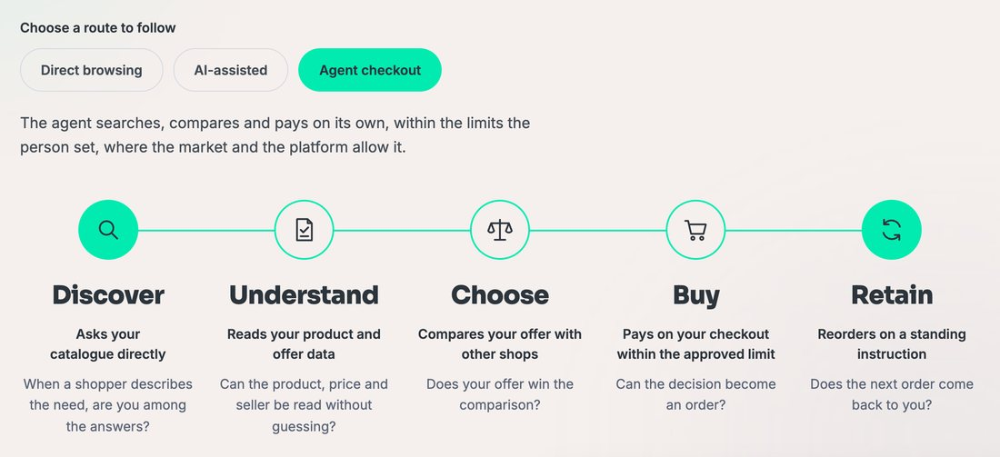
The default share image travels with every link to the site, into a feed, a chat or an email preview.
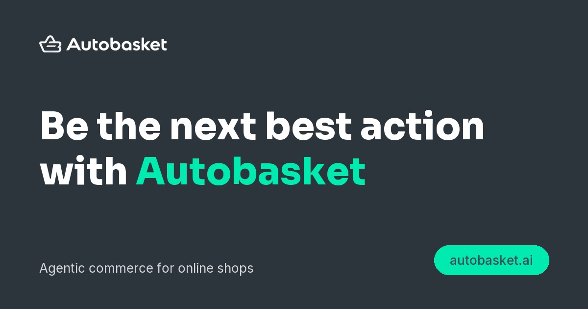
Set on 16 October 2026 around a finding the website publishes.
Make your products the ones agents can buy.
Two concepts set on 16 October 2026 for feeds that favour taller images, built from lines already on the website.
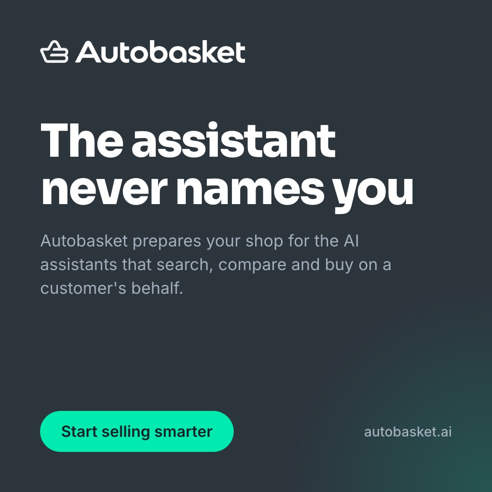
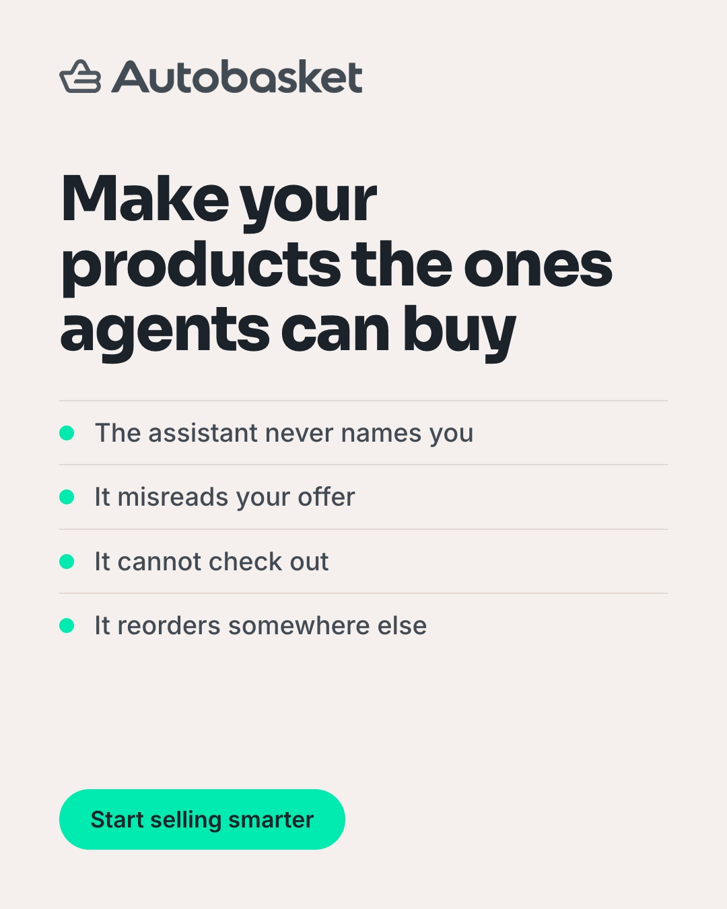
The same system at 1456 by 180, where only the mark, one line and one button survive.
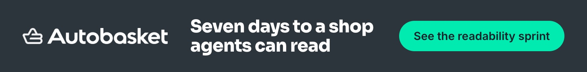
Every format keeps the rules from the colour pages: one accent, one action, and type that holds its contrast at the smallest size.
Close the book, or open the next one on the shelf, Quanthome.
autobasket.ai
Drag the page corner, or press the arrow keys
Institutional investors who sign off on real estate allocations. Practically speaking, they look for the source behind a figure before they read the claim around it.
The logo carries no symbol, only the name. In practice, the name sits in the same tone as the figures beside it, so nothing on the page competes with the data.
Brand Book v1.0 sets Ink, Paper and Quiet at a 72, 24 and 4 ratio, with no fourth grey. Ink on Paper reaches 21:1, the highest contrast a screen can show.
The Science of Sage Choices. The decision stays with the reader, and the method behind it is shown.
The Science of Sage Choices
Quanthome is read by institutional investors who sign off on real estate allocations and have been sold enough software to be wary of the next pitch. It computes ESG and portfolio metrics from public data, which allows it to score funds that do not report to GRESB or REIDA. I worked there as Head of Growth on a consulting basis from March to August 2026, inside a brand that already existed.
Practically speaking, my brand work was to apply its system to every report, email, audit and outbound sequence growth produced, without adding a fourth grey or a louder sentence.
The Science of Sage Choices
We bridge real estate and AI so you don't have to.
The voice is a trusted senior advisor, held to five words: calm, precise, human, bridging and enduring.
In practice, a finding comes first, with its scope and its source, and what it means for the reader follows in plain words.
The earlier tagline, Accessible AI for Swiss real estate, was retired on 7 July 2026, when the positioning moved to a multinational platform with local presence in each market.
Real estate data products often arrive in navy and gold, with a glass tower on the cover. Brand Book v1.0 set Quanthome a narrower rule: Ink, Paper and Quiet in a 72, 24 and 4 ratio, with no fourth grey.
In practice, the colour never competes with the figures, so the eye goes to the number and its source, which is where an institutional reader looks for a reason to trust it. The slogan makes the same promise in words: the decision stays with the reader, and the method behind it is shown.
Ink on Paper is the highest contrast a screen can show, and the approved tones stay close to it.
| Aa | Paper on Ink | 21:1 |
| Aa | Quiet on Ink | 19.26:1 |
| Aa | Label grey on Ink | 6.49:1 |
| Aa | Label grey on Paper, labels only | 3.23:1 |
Practically speaking, the label grey passes on Ink and falls under 4.5:1 on Paper, which suits a short label set large and would not suit a paragraph.
Brand Book v1.0 sets Ink #000000, Paper #FFFFFF and Quiet #F5F5F5 at a 72, 24 and 4 ratio, with one sanctioned label grey, #8F8F8F.
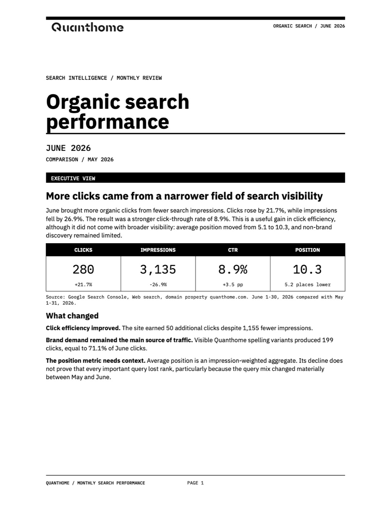
June brought more organic clicks from fewer search impressions. Clicks rose by 21.7%, while impressions fell by 26.9%.
Average position is an impression-weighted aggregate. Its decline does not prove that every important query lost rank.
In practice, every figure in the monthly report is followed by what changed and by what the figure does not prove, so each figure reaches the reader with its limits already attached.
Set on 16 October 2026 from the image the team used to explain the product.
Scores for funds that report to GRESB or REIDA, and for those that do not.
Two concepts set on 16 October 2026 for feeds that favour taller images, built from lines already on the website.
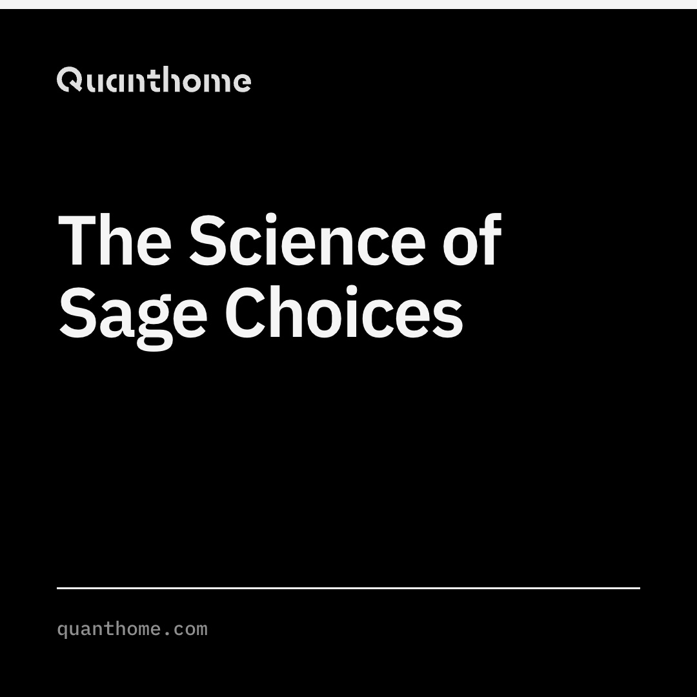
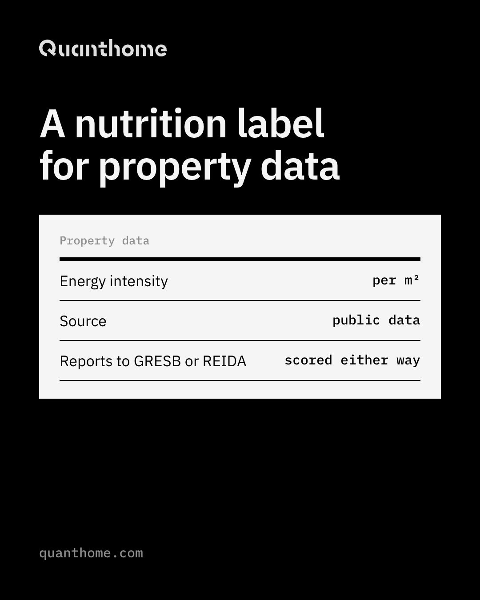
The same system at 1456 by 180, where only the mark, one line and one button survive.
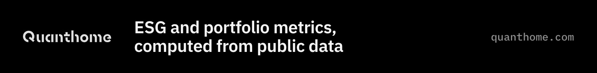
Every format keeps the rules from the colour pages: one accent, one action, and type that holds its contrast at the smallest size.
Quanthome is the one brand here I did not design, and it sits on the shelf to show the other side of the work, applying a system someone else set without bending it.
The last book on the shelf is Neurock, the brand Autobasket grew out of.
Drag the page corner, or press the arrow keys
Brand owners in Switzerland and Europe who watch buyers move from Google to AI assistants and fear becoming invisible.
An eight-spike star sits beside lowercase neurock in Sora ExtraBold. The brand book calls it the answer at the centre, a signal that lights up when an AI names the brand.
Neurock Yellow on Deep Navy reaches 17.02:1. The palette is closed at four colours with no reusable grey, so an ad, a cover and the website all read as Neurock from a thumbnail.
be the next best action, in lowercase, carried by a voice where every sentence is clear enough for a machine to quote and trustworthy enough for a buyer to believe.
be the next best action
Brand book, 2026, v3.8
Neurock speaks to brand owners who watch buyers move from Google to AI assistants and fear becoming invisible. In June 2026 those buyers had started asking ChatGPT and Perplexity which supplier to call, and the brands those assistants named were often the ones with the most readable pages, whether or not they had the best product.
I built Neurock to fix that for Swiss and European brands, so its own brand had to pass the test it sells. The foundation, mission and voice were written on 23 June, the brand book grew from 17 pages in July to 21 pages at v3.8 on 27 August, and the design system reached v3.23 on 23 September.
When agentic commerce left Neurock in September, it became a brand of its own, Autobasket, the second book on the shelf.
be the next best action
We make sure the brand that deserves the sale is the one AI assistants name and agents purchase.
Every sentence is clear enough for a machine to quote and trustworthy enough for a buyer to believe.
AI visibility services multiplied through 2026, and many borrowed the look of AI product sites, with violet gradients, glass panels and a sparkle icon. Neurock needed to be recognisable as a thumbnail in a feed, so it paired an acid yellow rarely seen in the category with a deep navy, and drew an eight-spike star that reads as an answer lighting up.
The voice runs the other way: plain-spoken, precise and quietly certain, so the colour gets the brand noticed and the sentences get it believed.
The design system locks the rule as measured, not judged: every approved pair is one light colour on one dark one.
| Aa | Neurock Yellow on Deep Navy | 17.02:1 |
| Aa | Electric Cyan on Deep Navy | 13.67:1 |
| Aa | Deep Navy on Paper | 16.8:1 |
| Aa | Yellow on White, banned | 1.09:1 |
Every pair that fails is two light colours together, which is why the yellow never meets white and the palette keeps no grey to fall back on.
#101417#00F5FF#F6FF47#F4F4F1The design system states it plainly: the palette is closed, and there is no reusable grey in this brand.
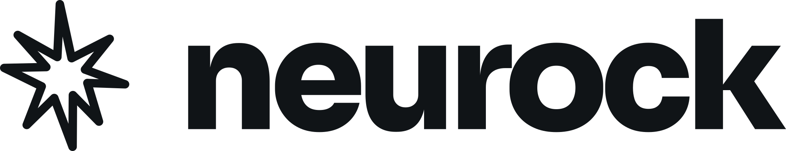
An eight-spike burst star sits beside lowercase neurock in Sora ExtraBold 800. The lockup is horizontal only, and the system ships no stacked version.
Open the component library in FigmaThe website runs in English, German, French and Italian across 140 pages, and the home page opens on the hero line Be the Name in the Answer.
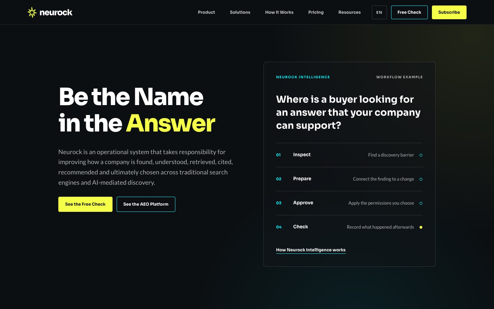
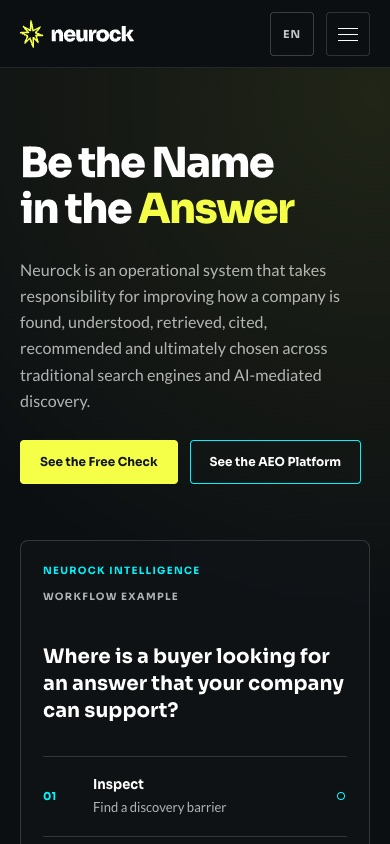
The phone layout keeps the yellow and cyan button pair and the workflow card, so the first screen still says what Neurock does before anything is scrolled.
Visit neurock.chEach of the six, produced on 30 July 2026, names one buyer problem and sends people to the answer test.
Neurock tests the category questions buyers ask AI.
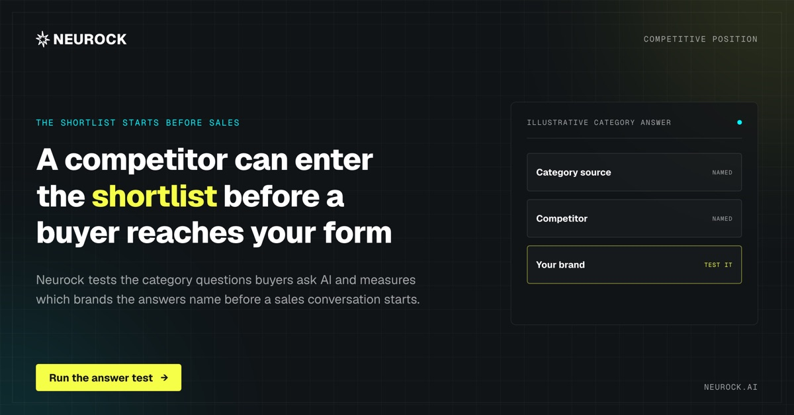
From the LinkedIn round of 29 June 2026, the ad that put the canonical line Citations beat clicks in front of buyers.
Search engines position pages. Answer engines quote sentences.
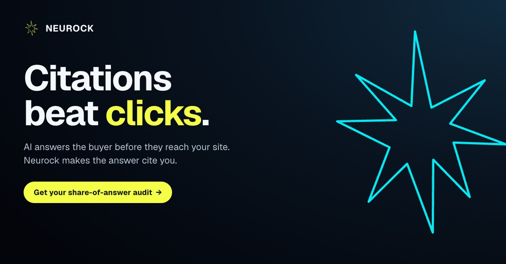
The LinkedIn banner, rebuilt on 26 October 2026 in Sora and Lato, carries the tagline be the next best action and keeps the left side clear for the profile mark.
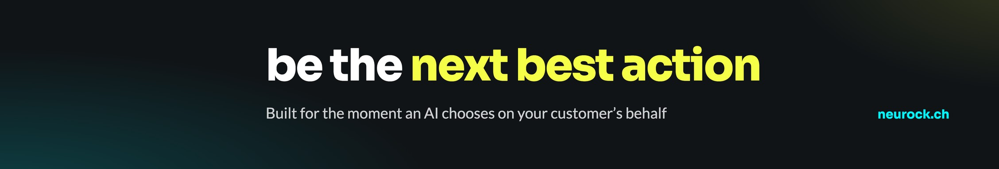
A looping visual from 24 June 2026, made for posts where a diagram explains the idea faster than a sentence: a prompt stops after one answer, while a loop keeps working toward a goal.
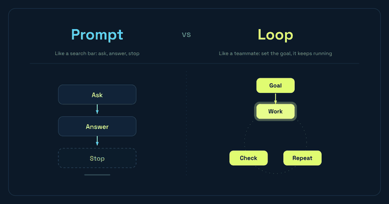
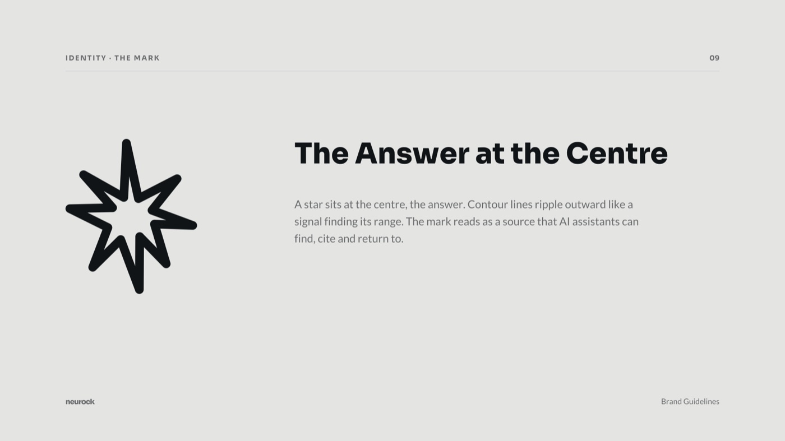
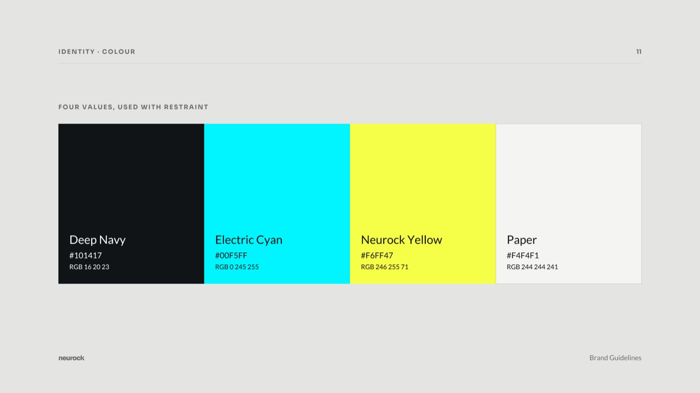
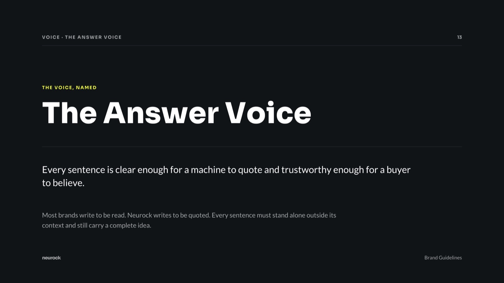
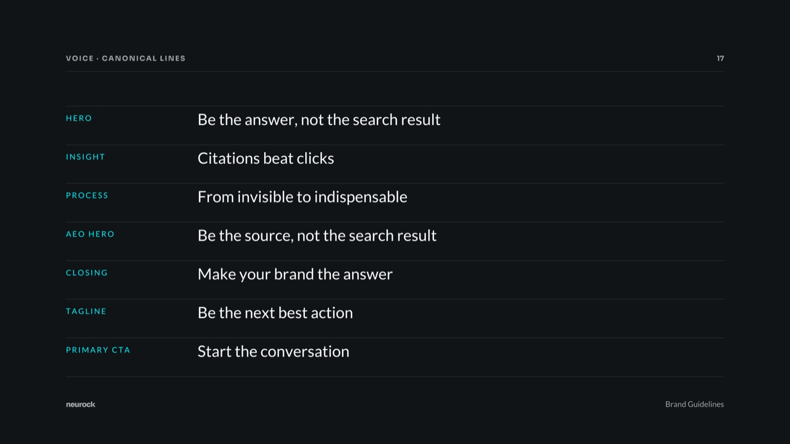
The mark, the colour, the Answer Voice and the canonical lines, four of the 21 pages that also cover positioning, the LinkedIn system and the website specification.
Close the book, or open the newest one on the shelf, Revault.
neurock.ch
Drag the page corner, or press the arrow keys
Growth and partnership teams at regulated finance, fintech and crypto companies, where every campaign has to clear legal, compliance and a partner bank before it runs.
A Bright Lavender tile carries an Ink Black R, and the word REVAULT is set in Russo One and drawn as outlines, so it renders the same in every place the font cannot reach.
White on the brand Lavender reaches only 3.21:1, so the button uses Lavender deepened to #8A5ABD, where a white label reaches 4.91:1, and marks in the brand Lavender carry Ink Black.
Growth you can take to compliance, the headline of the home page since the first build on 11 November 2026.
Growth you can take to compliance
Brand book, November 2026
Revault is a go-to-market, growth and marketing service for regulated finance, fintech and crypto teams. It runs their distribution, fills their CRM with qualified buyers and turns them into revenue, with every campaign approved by legal, compliance and partner banks.
That last clause shapes the whole brand. A crypto exchange or a neobank cannot publish a claim its compliance team has not seen, so Revault builds the claim library and the approval route first, and runs campaigns inside them afterwards.
The website went up on 11 November 2026, in English, German and French, and this brand system was set around it over the following three days.
Growth you can take to compliance
The work runs in three stages, each scoped from the one before, so a client never commits to a retainer before seeing what the diagnostic found.
Marketing for regulated finance tends to swing between two extremes, the grey bank page that says nothing and the crypto page that promises everything. Revault had to read as a team a compliance officer would let near the brand, so the system is quiet and every colour pair was measured before it shipped.
Ink Black carries the surfaces and the type, Platinum carries reading, and a single Lavender marks the next step. Where the brand Lavender failed a contrast check, the rule was to deepen the colour, never to accept the lower ratio.
Each pair that carries text clears the 4.5:1 WCAG floor, and the one pair that does not is written down as banned.
| Aa | White on Button Lavender, the main button | 4.91:1 |
| Aa | Ink Black on Bright Lavender, marks | 5.77:1 |
| Aa | Muted text on Ink Black | 11.19:1 |
| Aa | White on Bright Lavender, banned for text | 3.21:1 |
Text links on light surfaces use Lavender darkened to #6F3FA0, which reaches 6.54:1 on Platinum.
#AA7DCE#498C8A#0D1321#F3F3F4Lavender marks and glows, Dark Cyan supports it, Ink Black is the dark surface and the text on light, and Platinum is the reading surface and the text on dark.
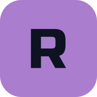
The wordmark is Russo One drawn as outlines, set in Ink Black on light surfaces and in Platinum on dark ones, and the tile works on its own wherever the full name will not fit.
Approval is the product, so the system carries a status set, and each status travels with its word and an icon because colour alone does not tell them apart.
| Aa | Approved | 5.58:1 |
| Aa | Rejected or failed | 5.93:1 |
| Aa | Needs review | 5.82:1 |
| Aa | Information | 6.52:1 |
Captured live on 14 November 2026. The hero opens on the line, one paragraph that names the audience and the approval rule, and a card that follows one buyer from lead to qualified to compliant revenue.
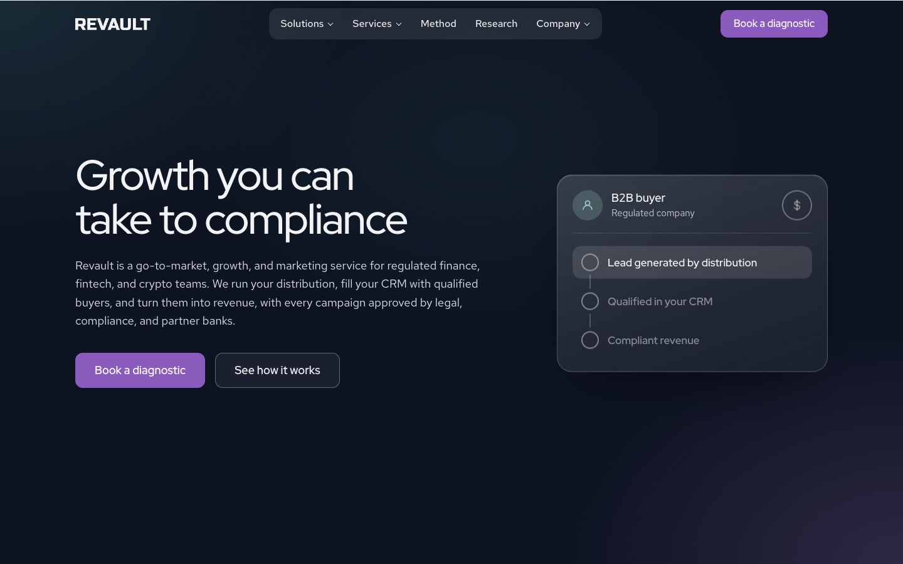
English sits at the root, German under /de/ and French under /fr/, and a script checks every translation against the English structure and its length limits before a build.
Visit the website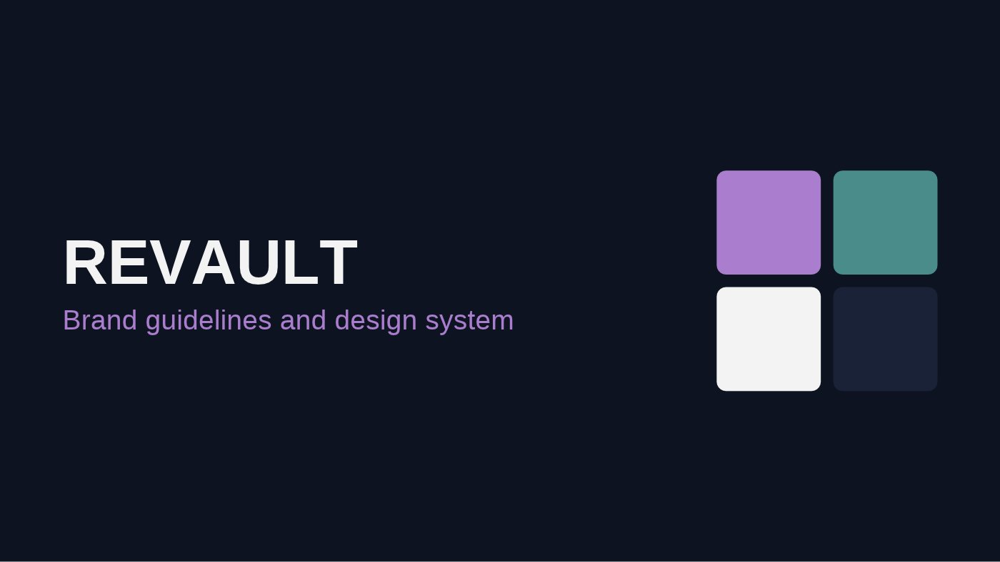
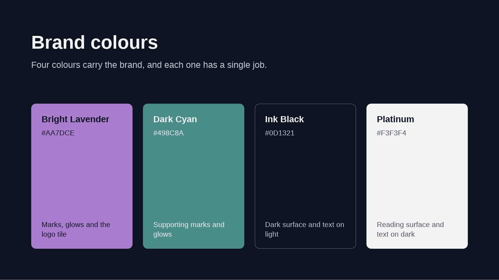
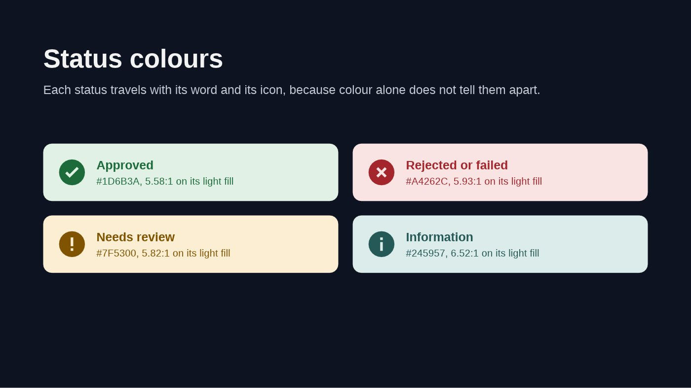
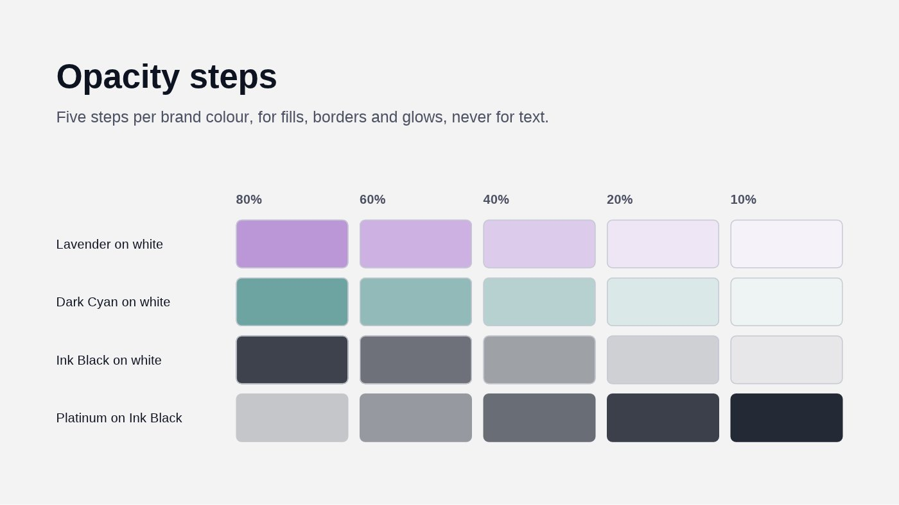
The cover, the colours, the statuses and the opacity steps, from a deck built in Canva from plain shapes and text, so every value can be edited rather than repainted.
Two concepts set on 14 November 2026 for feeds that favour taller images, built from lines already on the website.
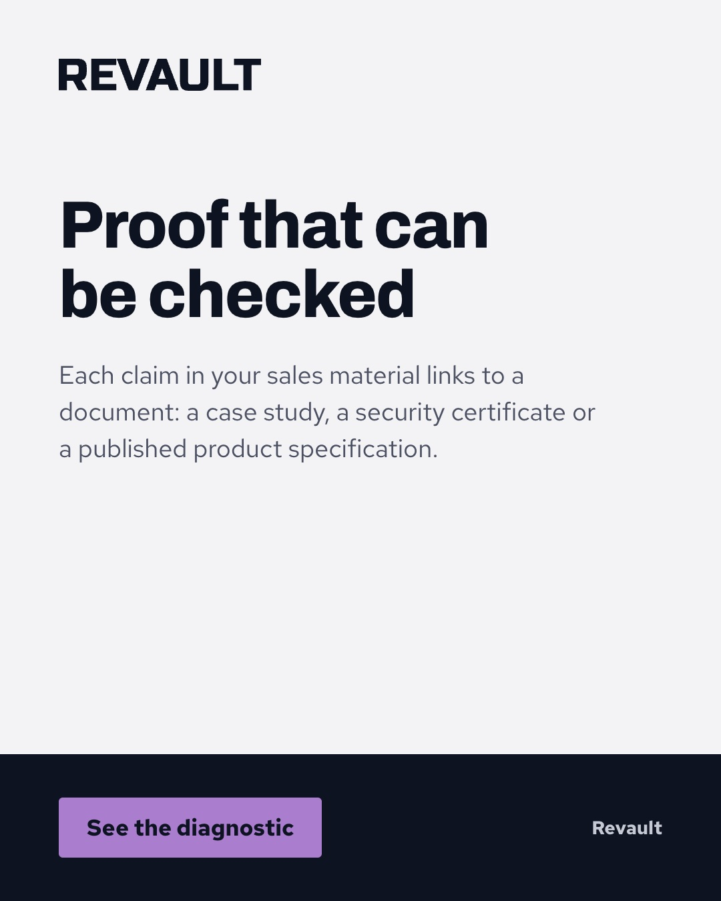
The same system at 1456 by 180, where only the wordmark, one line and one button survive.
Every format keeps the rules from the colour pages: Ink Black for the surface, one Lavender action, and type that holds its contrast at the smallest size.
Close the book, or start the shelf again with Torke.
Drag the page corner, or press the arrow keys